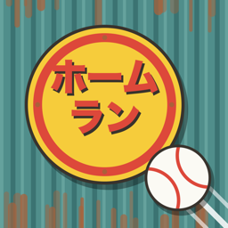

バッチングセンター
本物の速さの球を、たたいて打つ
町のバッティングセンターの打席に立って、ピッチングマシンの球を打つ iPhone のゲームです。球が機械を出てから届くまでの時間は、本物と同じです（120キロで約0.54秒、160キロで約0.40秒）。球が来る所を、来た時にたたいて打ちます。
- 打席は8つ：80キロ・100キロ・120キロ・140キロ・160キロ・カーブ・変化球（スライダー・フォーク・カーブ・シュート）・おまかせ
- 球が出ると、球が来る所に赤い丸が出ます。まわりの黄色い輪がちぢんで、赤い丸に重なった時にたたくと、ちょうど当たります
- たたいた時と場所から、打球の速さ・角度・飛んだ距離を計算で出します。早いと引っぱり、おそいと流し打ち。高さでゴロやフライに変わります
- 奥のネットの黄色い的に当てるとホームラン
- 1ゲーム20球。終わると、球ごとの球速・結果・距離・タイミングがのった成績の紙が出ます
- 打席ごとの自己ベストと、さいきんの30ゲームの成績の紙が残ります
- 右打ち・左打ちを選べます。素振りの画面で、振りの形をゆっくり見られます
- 登録はいりません。成績は iPhone の中だけに保存します。課金はありません